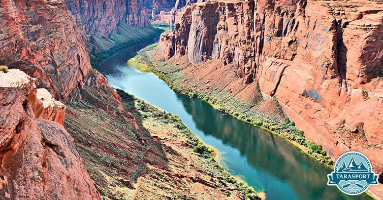

Adventure's Pictures
Colorado River - Grand Canyon
This is not just a rafting trip, it’s an adventure in the every meaning of the word. The Colorado River, flowing through Colorado, Utah and Arizona provides 360 kilometers of pure joy. Fast rapids make your heart racing while slow stretches calm you down. Have you been to some of these rivers? Come to Tara if you haven’t already. Well, even if you did, come again for more amazing adventures! Bottom Group
Where wildlife and wild nature come together to form an amazing experience. Zambezi River offers an adrenaline filled adventure for the skillful rafters. Almost half of the river’s rapids are graded as Class IV. The sight of Victoria Falls and it’s massive swells is nothing short of magical. You also have a chance of seeing crocodiles and hippos in their natural habitat.
Zambezi River - Zimbabwe
Where wildlife and wild nature come together to form an amazing experience. Zambezi River offers an adrenaline filled adventure for the skillful rafters. Almost half of the river’s rapids are graded as Class IV. The sight of Victoria Falls and it’s massive swells is nothing short of magical. You also have a chance of seeing crocodiles and hippos in their natural habitat.
Tara River - Montenegro
Maybe we are a little biased, but we can’t ignore the wonderful feeling of waking up in the untouched beauty of Montenegro and Bosnia. Tara river flows through the second deepest canyon in the world, and it is the largest clean water source in Europe. If that alone doesn’t convince you maybe it’s rapids ranging from Class III to V will change your mind. Add into this the amazing homemade meals and you will surely be delighted.
| Trip Location | Time | Price | Book |
|---|---|---|---|
| Colorado River - Grand Canyon | Monday-Friday 6:00am-5:00pm | 300$ | |
| Zambezi River - Zimbabwe | Monday-Friday 6:00am-5:00pm | 200$ | |
| Tara River - Montenegro | Saturday 8:00am-4:00pm | 500$ |